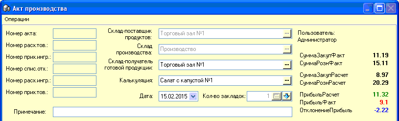

В данном подразделе рассмотрим порядок заполнения
заголовка документа Акт производства.

В заголовке выберите склад-поставщик продуктов -
с него будут браться товары, преобразуемые в ингредиенты, в случае их нехватки
на складе №99 Производство. Опция стает неактивной, когда заполнена табличная
часть акта. Можно определить этот склад в настройках, по умолчанию
подставляемым в это окно.
Склад производства - выбирается автоматически,
всегда №99 Производство.
Склад-получатель готовой продукции - куда будет
автоматически оприходован произведенный товар.
Калькуляция - выберите калькуляционную карту,
согласно которой будет осуществляться работа.
Дата - автоматически подставляется текущая
дата.
Количество закладок - укажите количество закладок
ингредиентов, которые нужно одновременно произвести в этом акте и...
...нажмите кнопочку со стрелкой - при этом автоматически будет заполнена часть табличной части
(вкладки №1 и №2) внизу формы (см.следующий подраздел справки).
Пользователь - присваивается программой
автоматически, согласно вошедшему в программу пользователю.
Суммы расчетные и фактические - автоматически
подсчитываются, при заполнении табличной части.
Главное меню формы отвечает только за сохранение
и печать акта, остальные функции по работе с табличной частью документа
вынесены в отдельные контекстные меню правой кнопки мыши.